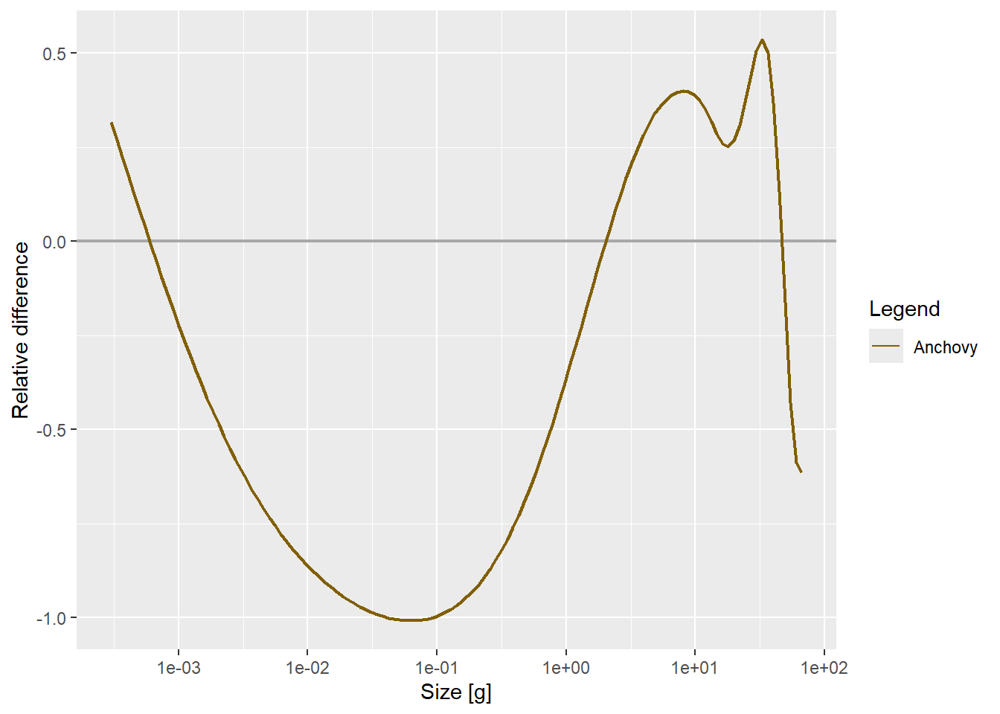

Confirming the bottleneck directly with flux diagnostics, recognising the current model is too extreme, and finding that fishing effort and timing alone ease the jam substantially plus an evening detour into the nonlinear dynamics textbook.
Author
Samia
Published
June 18, 2026
Where Day 8 Left Us
Day 8 closed the loop on the oscillation mechanism: a synchronised, food-limited bottleneck at juvenile sizes, confirmed via FFT (one fundamental frequency, not a quasiperiodic mix), the w_mat scaling law (period ~ w_mat^0.2), and the phase/heatmap analysis (a standing wave, not a travelling cohort pulse). Discussing it with my supervisor, the consensus was that this is the traffic jam with recruits queuing against the food ceiling at small size.
That reframing raised the obvious next question: if it’s a traffic jam, can fishing act like ramp, thinning the queue at the bottleneck size enough to let the remaining fish through faster, and recovering some yield in the process? Today tested that directly, and ended up spending most of the day on a more basic question: is the jam itself too severe to be a realistic model in the first place?
New Diagnostic Tools
Before re-running the fisheries comparison, I added a couple of interactive diagnostics that make it much faster to see what’s happening across the whole size spectrum, not just at one size class at a time:
nice_animation plays the whole size spectrum (Anchovy + Plankton) forward through time, and nice_biomass_plot tracks total Anchovy biomass, small Anchovy biomass (0.01–0.4 g), and Plankton biomass on the same log-scale time series. Both make it much easier to see the bottleneck rather than infer it from a single summary statistic. Together with plotHover() on getBiomass() and the built-in getFlux(sim, power = 2), these became the standard diagnostic set for today.
Setting Up: A Slightly Different Anchovy
The parameterisation was tweaked slightly from Day 8 with lambda being changed to 2.05 (the value that produced the sharp phase transitions in the Day 8 lambda sensitivity check), the resource depletion factor was loosened from 0.001 to 0.005 (less starvation than before), and the initial condition switched to a clean power law (0.001 * w^-1.8) instead of the old perturb-then-settle trick:
plotHover(getFlux(sim_600, power =2), tlim =c(550, 600), log ="xy")
The FFT diagnostics from Day 8 were re-run on this version too, just to confirm the dominant period and feeding-level signature still look like the same family of dynamics before drawing conclusions from the fishing experiments:
Code
power_spectrum <-function(signal, dt) { signal <- signal -mean(signal) n <-length(signal) freqs <- (1:(n -1)) / (n * dt) power <-Mod(fft(signal))^2 half <-seq_len(floor((n -1) /2))data.frame(freq = freqs[half], period =1/ freqs[half], power = power[half +1])}dt <-0.2bm <-getBiomass(sim_600)[, "Anchovy"]times <-as.numeric(names(bm))ps_bm <-power_spectrum(bm[times >300], dt)plot_ly(ps_bm |>filter(period >1, period <50)) |>add_lines(x =~period, y =~power) |>layout(xaxis =list(title ="Period (years)"),yaxis =list(title ="Power", type ="log"),title ="Power spectrum — Anchovy biomass")fl <-getFeedingLevel(sim_600)fl_times <-as.numeric(dimnames(fl)[[1]])fl_small <- fl[, "Anchovy", 1]ps_fl <-power_spectrum(fl_small[fl_times >300], dt)plot_ly(ps_fl |>filter(period >1, period <50)) |>add_lines(x =~period, y =~power) |>layout(xaxis =list(title ="Period (years)"),yaxis =list(title ="Power", type ="log"),title ="Power spectrum — feeding level (smallest size class)")
Confirmed: It’s Definitely a Bottleneck
getFlux(sim_600, power = 2) settles the question that’s been hanging since Day 8. This is unambiguously a bottleneck, not just a plausible interpretation of a standing wave. Watching flux directly on a log-log scale shows growth visibly stalling at juvenile sizes before the surviving fish push through into the adult range. There’s no more hedging needed here: it’s a traffic jam, and it’s visible in the flux itself, not just inferred from phase analysis.
But looking at the same diagnostics also raised a concern: the oscillation at large sizes is small, and the resulting yield numbers are correspondingly tiny. That’s the real tell that the current parameterisation is too extreme as the bottleneck is squeezing so hard that almost nothing of substance is reaching the sizes a fishery would care about, regardless of fishing strategy. A model where adult biomass barely oscillates isn’t just inconvenient for catching fish but it’s a sign the food-limitation effect is dialled up further than is biologically reasonable.
The plan: dial the resource depletion factor back further than today’s 0.005 (a smaller reduction in resource_rate, i.e. more food available) and see whether a less starved juvenile stage produces a more moderate jam, one that still oscillates and still bottlenecks, but lets enough biomass through to large sizes to make the fisheries question meaningful. The way I tested this was by running both versions side by side, today’s extreme parameterisation and the eased one and checking which actually produces a better outcome, not just assuming softer is better.
Easing the Jam With Fishing Alone
Even without touching the ecology, two changes to the fishing strategy on the bottleneck gear eased the congestion substantially within today’s (still extreme) model:
plotHover(getBiomass(sim_600), tlim =c(550, 600))plotHover(getBiomass(sim_peaks_only), tlim =c(550, 600))plotHover(getFlux(sim_600, power =2), tlim =c(550, 600))plotHover(getFlux(sim_peaks_only, power =2), tlim =c(550, 600))
Two changes were made to the fishing strategy on the bottleneck gear:
Fishing constantly (effort applied at all times, not just near peaks), instead of not fishing at all.
Widening the fishing window around each peak (2.6 years either side, up from 1).
Eyeballing the plotHover panels for flux and biomass between sim_600 and sim_peaks_only, the dynamics clearly responded a lot to fishing pressure applied at this size and timing which is exactly what the “ramp metering” framing predicted back at the top of the day. Whether that response counts as “relief,” though, turned out to depend heavily on which size class you look at, and only became clear once plotRelative put an actual number on it rather than comparing two plots by eye.
Quantifying the Relief: plotRelative on Flux
Eyeballing two plotHover panels side by side is suggestive but not a number. mizer’s plotRelative() gives the relative difference directly, applied to flux rather than biomass since flux is the more direct signature of the bottleneck itself:
Code
plotRelative(getFlux(sim_600, power =2), getFlux(sim_peaks_only, power =2), tlim =c(550, 600))

The resulting curve is not the broad, mostly-positive shape I’d expected going in. Reading it left to right: at the very smallest sizes (near w_min) the relative difference starts out mildly positive, around +0.3, but immediately turns negative and dives to a sharp trough of roughly −1.0 around 0.05–0.1g which is right in the middle of the juvenile range the flux diagnostic identified as the bottleneck earlier today. It climbs back through zero around 1g, then turns positive through the sub-adult/adult range: a first peak of about +0.4 near w_mat (10g), a small dip to about +0.25 around 20g, and a second, sharper peak of about +0.55 around 30–40g. Then it crashes again, crossing zero around 50–60g and ending around −0.6 at the very top of the spectrum, near w_max.
So the honest read is close to the opposite of what I expected: peaks-only fishing on the bottleneck gear makes the juvenile congestion worse, not better, across almost the entire juvenile range ,from just above w_min out to roughly 1g , which is exactly where flux was shown to be stalling in the first place. The relief only shows up for sub-adults and adults (1g up to ~40g), and then reverses again at the largest sizes.
The small-number-artefact caution from earlier in the project still matters at the right-hand tail: abundance near w_max is small in both runs, so the −0.6 endpoint is probably exaggerated rather than fully real, and worth checking against the absolute flux values directly before trusting its exact size. The juvenile-range trough is a different story as that part of the spectrum is densely populated in both runs, so dividing two small numbers isn’t the issue there; that dip looks like a real effect, not a plotRelative artefact.
Net result, corrected: peaks-only fishing does not relieve the bottleneck where it matters most. It relieves congestion for sub-adults and fish approaching/just past maturity, but it measurably worsens the food-limited queue at juvenile sizes, the opposite of what eyeballing the plotHover panels suggested. That’s the real value of putting a number on it rather than comparing two plots by eye.
Open Question: Why the Juvenile Phase, Specifically?
Confirming that the bottleneck sits at juvenile sizes isn’t the same as explaining why it has to be there. Day 8’s growth-scaling argument (juvenile growth rate ~ w^0.8 under this search-rate exponent, giving the w_mat^0.2 period law) explains how long juveniles take to grow through, but not why the food-limitation itself concentrates so heavily on that stage rather than being spread more evenly across the spectrum. Is it simply that juveniles sit at the steepest part of the encounter-rate-vs-requirement curve, or is there something more structural such as competition with adults for the same plankton pool, the shape of the plankton spectrum itself, the specific value of lambda?
A Quiet Evening With the Textbook
Had a bit more breathing room in the evening, so instead of running more simulations I sat down with the nonlinear dynamics textbook for a while. It was a nice change of pace , going back to first principles on limit cycles, bifurcations, and phase portraits while everything I’d seen that day (the standing wave, the sensitivity to lambda near 2, the way fishing pressure reshaped the attractor) was still fresh made the abstract material land much more concretely than usual. It’s reassuring that the formal language for what’s happening in sim_600 already exists and is well worked out which gives me some confidence that the open questions above (especially the “why juveniles” one) are tractable with the right framing, not just empirical observations with no theory behind them.
What’s Next
Change the fishing selectivity to avoid fishing at juvenile age
Quantify how much of the easing came from effort vs. window, since both were changed together today. A small sweep over each independently would clarify which lever matters more.
The juvenile-bottleneck-gets-worse-under-fishing finding wasn’t just an artefact of the old severe parameterisation or the selectivity bug as it shows up directly in today’s plotRelative result, with both fixes in place. Worth understanding why peaks-only fishing on this gear worsens congestion for juveniles while relieving it for sub-adults/adults, rather than just confirming that it does.